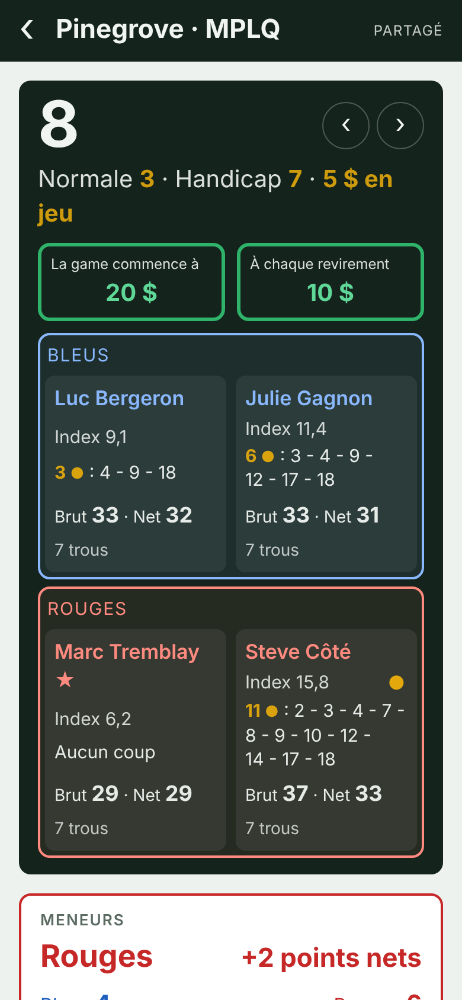
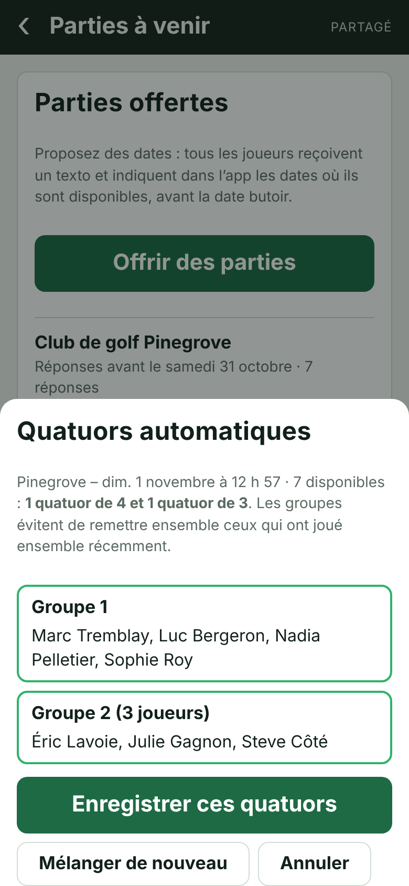
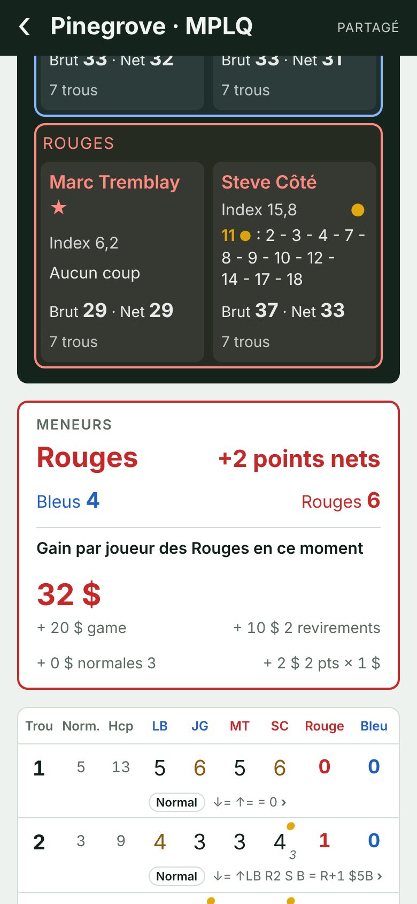

Fanion Game offre les dates, recueille les disponibilités, forme les quatuors, compte les points pendant la partie et dit qui doit quoi à la fin. Fini les 40 textos du jeudi soir.
Gratuit jusqu’à 4 joueurs. Sur iPhone, Android et ordinateur. Fait au Québec, en français.

L’organisateur fait tout depuis son téléphone. Les joueurs reçoivent un texto, touchent le lien et répondent.
Choisissez le terrain ou le centre de simulateurs, les dates et une date butoir. Tous les joueurs du groupe reçoivent un texto.
En un geste, depuis le lien. Vous voyez qui est libre pour chaque date, et combien de quatuors ça donne.
Fanion Game mélange les groupes pour éviter de toujours jouer avec les mêmes. Groupes de 3 permis quand le compte n’est pas rond.
Le responsable entre les scores ; tout le monde suit en direct. Coups de handicap, points, skins et argent sont calculés à chaque trou, même sans réseau.

Choisissez le jeu en créant la partie. Tout se compte au net, avec les coups de handicap de chacun.
À la fin, Fanion Game fait le compte : la mise de départ, les revirements, les points et les normales 3. Chacun sait ce qu’il doit, sans calculatrice au bar. L’app note les gageures ; elle ne touche jamais à l’argent.

Votre groupe joue tout l’hiver dans un centre de simulateurs ? Fanion Game suit.
Pas d’abonnement par joueur : l’organisateur paie une fois, et le groupe en profite toute la saison.
Pour essayer avec votre quatuor.
Pour une gang qui joue toute la saison.
Pour une ligue de club ou de centre de simulateurs.
Plus de 64 joueurs, un club ou un centre de simulateurs ? Écrivez-nous.
Non. Ouvrez le lien sur votre téléphone, puis ajoutez Fanion Game à votre écran d’accueil (sur iPhone : bouton Partager, puis « Sur l’écran d’accueil »). Elle s’ouvre ensuite comme une app.
Oui. Les scores entrés sans réseau sont gardés sur le téléphone et envoyés dès que le signal revient.
Seul le responsable de la partie entre les scores. Les autres suivent la partie en direct s’ils le veulent, et répondent aux dates offertes avec le lien reçu par texto.
Avec leur nom et leur numéro de téléphone. L’invitation par texto choisit déjà leur nom ; ils n’ont qu’à entrer leur numéro.
L’organisateur paie 50 $ plus taxes par carte de crédit, sur une page de paiement sécurisée (Stripe). Il indique le nom de son groupe et reçoit un reçu par courriel. Le groupe passe à 16 joueurs dans les 24 heures.
Non. Vous payez une saison à la fois. Aucun montant n’est prélevé sans votre accord.
Vous avez 30 jours après l’achat pour demander un remboursement complet, sans justification. Écrivez à bonjour@fanion.ca.
Non. Fanion Game calcule qui doit quoi selon vos règles, mais ne touche jamais à l’argent. Vous réglez entre vous, comme d’habitude.
Les noms, numéros et parties de votre groupe ne sont visibles que par les membres du groupe. Consultez notre politique de confidentialité.